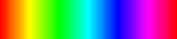

İki görev arasında geçiş yapma konusunda ne kadar iyisiniz?
Farklı şekil ve renklere sahip nesneler göreceksiniz.
Bu nesneleri hem şekillerine (yuvarlak/köşeli) hem de renklerine (mavi/yeşil) göre sınıflandırmanız gerekecektir.
Görevdeki zorluk, her seferinde bu iki özellikten sadece birinin geçerli olmasıdır. Bu özellik rastgele değişebilir.
Bu nedenle, yanıt verirken şu anda şekil mi yoksa renk mi sorulduğuna dikkat etmelisiniz. Ekranın üst kısmındaki ipucu, o an geçerli olan özelliği size gösterir.
| Şekil Nesne yuvarlak mı yoksa köşeli mi? |
Renk  Nesne mavi mi yoksa yeşil mi? |
Sonraki sayfaya geçmek için lütfen
sağ ok tuşuna basın.